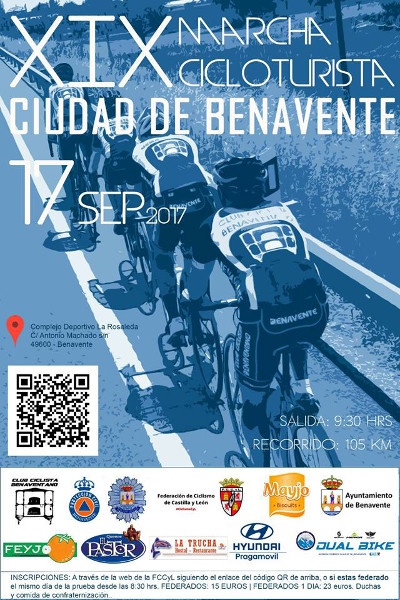

Próximas actividades
17 Septiembre 2017 - XIX Marcha Cicloturista

XIX MARCHA CICLOTURISTA CIUDAD DE BENAVENTE.
NOTA INFORMATIVA: Para evitar problemas de última hora y hacer una mejor previsión logística, nos vemos en la necesidad de tener que realizar todas las inscripciones a través de la web de la Federación de Ciclismo de Castilla y León, con o sin licencia.
El plazo de inscripción por lo tanto finalizará el próximo jueves, día 14 de septiembre, a las 12h de la noche y no podremos realizar inscripciones el mismo día de la prueba, como habíamos anunciado en un principio y por lo cual pedimos disculpas. Así mismo, os informamos que el sábado, día 16 de septiembre, se podrá recoger el dorsal y la bolsa del corredor en el Polideportivo de La Rosaleda, de 19h. a 21h.
Más info e inscripciones en la web de yosoyciclista.com
Buena previsión del tiempo para disfrutar mañana de un buen día de ciclismo. Fresquito a primera hora pero prácticamente despejado y temperatura en ascenso a lo largo de la mañana. Hoy ya se podrán retirar los dorsales y la bolsa del corredor en el Complejo Deportivo de La Rosaleda, de 19h. a 21h. y mañana domingo a partir de las 8'30h y además podremos degustar un café antes de la salida.